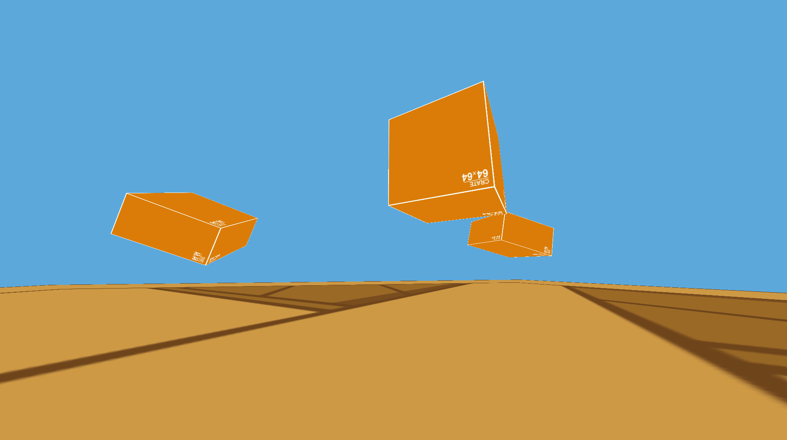
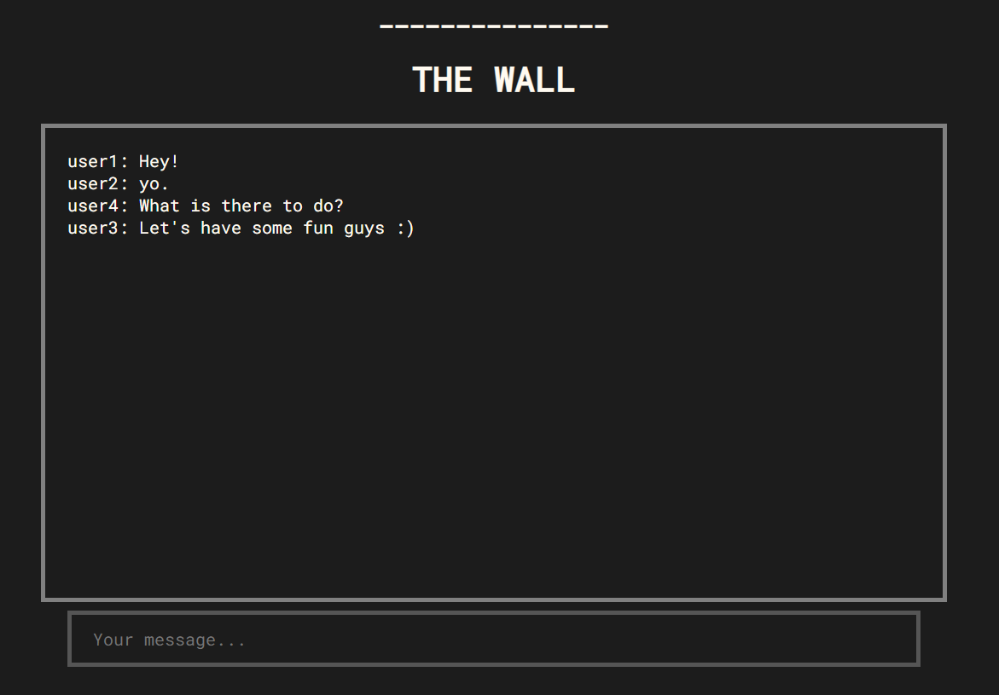
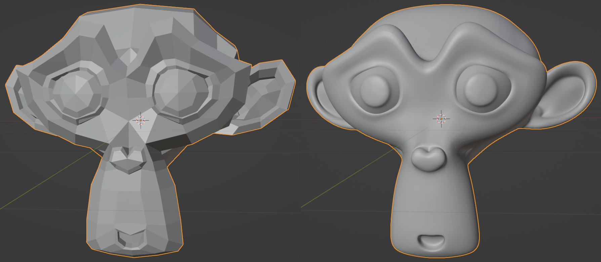

Welcome to my site :)
I am an computer science student at the University of Florida!
Feel free to look around and check out my works.
| Preview (Link embedded in image) | About |
|---|---|
|  | pl4tform: A simple 3D platforming game made in C and OpenGL. It includes collision detection and response with basic movement physics. |
|  | The_Wall: A basic (Bulletin Board System) BBS-like server. Users connect to the server using their browser of choice and can chat anonymously. It was built with NodeJS and the ExpressJS framework. |
|  | Polyhedral Splines Modifier: A several month-long, WIP, project developing a native object modifier for generating polyhedral splines in the open-source 3D graphics software, Blender. |